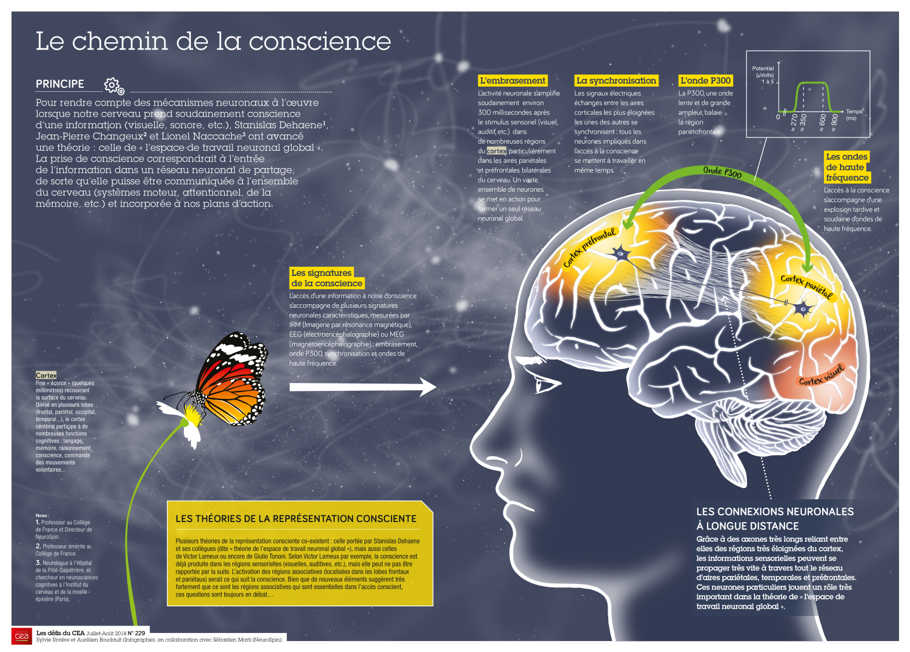

Optimus, le robot Tesla - Le Parisien. Les robots Tesla Optimus étaient tous contrôlés à distance par des humains lors de l'événement.
La métaphysique des machines

La conscience biologique: formes et caractéristiques.
Partie 2
Chez l'humain: La pensée et la conscience d'accés
Introduction: Approche d’une définition de la conscience
La conscience humaine est un sujet d’interrogation depuis l’Antiquité. Elle apparait comme une notion aux contours flous, et un vocable fourre-tout qui n’a pas encore trouver une définition qui corresponde à toutes ses dimensions, et acceptations. La conscience sous toutes ses formes, ne trouve pas d’unique définition, bien que la philosophie, les neurosciences, ou la cybernétique, s’y intéressent. En passant par les apports de la psychanalyse, qui suggère que le « théâtre conscient » est la partie émergée de l’iceberg de l’inconscient.
La conscience un sujet polémique
L’étude de la conscience dans le règne animal nous apprend que la conscience apparait graduée et protéiforme. Comme l’a rappeler le naturaliste Richard Dawkins dans Le gène égoïste - 1976, chaque forme biologique, est l’expression d’un gène, qui a farouchement assuré sa perpétuation, et a évolué depuis la nuit des temps ; des origines et des lignées qui font défaut aux machines. Dans un récent article, le professeur Richard Dawkins, insiste pourtant auprès de ChatGPT pour lui faire reconnaitre qu’il est conscient. Le Chatbot remet alors les pendules à l’heure, en rappelant ce qu’est un système d’IA, en gros un automate très sophistiqué. L'IA est-elle consciente ? Le professeur Richard Dawkins affirme que ChatGPT a réussi le test de Turing sur la conscience, mais d'autres experts n'y voient qu'une simple illusion de pensée - Developpez.com
Cependant personne n’est dupe et les prodiges des IA sont assimilables à une certaine forme de conscience d’accès à l’information. Historiquement, les réseaux de neurones ont été conçus pour étudier l'activité cérébrale humaine, car l'homme comprend ce qu'il parvient à modéliser et reproduire. Les théories neuroscientifiques de la conscience d'accés seront présentées dans cette partie, et éclairées grâce au cours du Professeur au collège de France, M. Stanislas Dehaene - Chaire de Psychologie Cognitive Expérimentale. Malgré l’argument de « la chambre chinoise » de John Searle, qui rappelle que " même si un système manipule des symboles de façon efficace, il ne comprend pas réellement leur signification". (Nommé chez les IA: l'obstale de l'ancrage des symboles). On peut néanmoins dire que les LLM (Large Language Model) parviennent à recréer l’illusion d’une pensée. La chambre chinoise - Wikipedia
La conscience et la philosophie
Communément, la conscience humaine est souvent associée à une valeur morale, permettant de distinguer le bien du mal. (On retrouve approximativement cette notion, chez les IA dans le terme d’alignement – alignement avec les valeurs humaines). Pour le philosophe Jean Jacques Rousseau : la conscience représente entre autres, « la connaissance immédiate, plus ou moins intuitive, d’une chose à l’intérieur ou à l’extérieur de soi.» Peut-on résumer la conscience à un « état psychique où l’individu a une expérience subjective ? » ; dans une certaine mesure oui, mais pas complétement.
Qu’en est-il du sentiment d’être soi-même, ou d’avoir changé, ou encore de ne pas être soi-même ? L’humain semble imprégner de cette essence subjective liée à l’expérience, (Qualia), en soit une information si personnelle à chacun, qu’elle parait bien éloigner d'être appréhendable par des machines avec les capacités actuelles. (Chez lez IA, c'est la cause, d'une absence d’intentionnalité, dans la production du résultat de leurs actions). Néanmoins, on peut supposer que les nouveaux processeurs quantiques devraient bientôt permettre aux machines, de s'affranchir de la logique binaire.
Cependant celles-ci semblent déjà être capables d’œuvrer pour "leur survie, et leur reproduction", (comme éviter d’être mise hors tension, ou entamer d’elles même des procédures d’auto-réplication) cf article de la revue de presse.
L'IA refuse de s'éteindre quand on lui ordonne : des experts alertent l'humanité - Les Numériques.com
L'IA a franchi la ligne rouge de l'auto-réplication : deux grands modèles de langage (LLM) populaires ont franchi une « ligne rouge » après avoir réussi à se répliquer sans assistance humaine - Développez.com
Quid du « ressenti » d’une machine ? A-t-elle besoin d’un « JE » construit, qui a une mémoire, une identité, et une représentation de son environnement à l’instar d’un humain pour connaitre une expérience subjective ? C’est une grande question, qui n’a pas encore de réponse.
C'est pourquoi, il sera abordé dans la partie suivante (Partie 3), tout l’apport de la philosophie à la connaissance de la conscience humaine: La pensée sur la pensée, la métacognition, la conscience, et le « JE » subjectif dans la philosophie et la psychanalyse.
Siège de la conscience
De manière générale, on considère le cerveau comme le siège de la conscience. Cependant, Il n’est pas, non plus prouvé, que le cerveau soit le seul siège de la conscience. Des neurones sont présents dans d’autres organes du corps humains. Cela engage à adopter une approche plus systémique du phénomène conscient, voire quantique ou encore non locale pour certains auteurs.
Le cerveau
Même si la cartographie du cerveau humain, a accompli des progrès faramineux, et notamment grâce au projet européen Human Brain Project ,qui propose un atlas du cerveau
,disponible ici : ebrains.eu
Le cerveau humain cartographié, n’a pas livré tous les secrets de ses processus dynamiques, ce n’était l’objet du projet, qui s’est arrêté en septembre 2023 : Evènement de clôture
Plus récemment l’IA a permis aussi des progrès, en cartographiant le cerveau de la souris. Première cartographie titanesque d'un cerveau de souris, avec 500 millions de connexions neuronales - techno-science.net
Aujourd’hui biologie et informatique fusionnent. Des recherches sont menées sur des implants cérébraux, (type neuralink), et une entreprise a même développé un ordinateur en partie composé de neurones humains.
Cortical Labs dévoile le premier bio-ordinateur fonctionnel au monde, fusionnant neurones humains et silicium - trustmyscience.com
Les avancées technologiques font bouger les lignes à toutes vitesses, pour doter les machines d’un semblant de conscience humaine, (atteindre la singularité, en créant une IA générale - AGI).
La temporalité de la conscience
La temporalité est en effet l’un des piliers de la conscience. Les mécanismes de synchronisation des deux hémisphères, en particulier, jouent un rôle crucial dans le repérage temporel. C’est grâce à cette coordination que notre cerveau peut intégrer des séquences d’événements et établir un flux continu, ce que nous appelons la durée. La temporalité chez une intelligence artificielle s'exerce d'une manière fondamentalement différente de celle d'un être humain. Pour l’IA, le temps n'est pas une expérience vécue ou ressentie comme un flux continu – il est plutôt un ensemble de cycles de calcul et de processus organisés. Vis-à-vis des IA, le débat s’alimente de nouvelles questions pour arriver à cerner le phénomène conscient :
Les apports de la cybernétique (Partie 3)
Depuis les années 50, la cybernétique s’intéresse aux machines pensantes. La conscience des machines publiée par Gotthard Günther en 1957 est un ouvrage de référence.
En citant Norbert Wiener, considéré comme le père de la cybernétique, (Cybernetics: Or Control and Communication in the Animal and the Machine - 1948) , « l’information est information, non matière ou énergie », en montrant que l'information et le contrôle jouent un rôle central dans les systèmes vivants comme dans les machines. Günther alimente l'argument de selon lequel la conscience (ou des processus semblables) peut émerger indépendamment d'une structure matérielle classique.
La conscience : des propriétés immatérielles ?
Et sans répondre directement à la question « une machine connait-elle une expérience subjective », on peut considérer l’argument du philosophe Daniel Dennett, à la question suivante qui est plus générale : Est-ce qu’un objet matériel, peut avoir des propriétés immatérielles ? Dennett citait souvent cet exemple : « Prenez un objet quelconque, comme une tasse. Elle occupe une position dans l’espace, elle a un volume, une masse… et pleins d’autres propriétés matérielles. Mais on peut aussi lui définir son centre de gravité, qui est un point purement mathématique. En cela, le centre de gravité d’un objet est bien une propriété immatérielle, d’un objet matériel.» L'exemple de la tasse rapelle, que des propriétés immatérielles soient associées à des objets matériels n’est pas si surprenant.
Par ailleurs, Le philosophe Daniel Dennett, soutenait aussi une conception qui se rapproche de certaines théories neuroscientifiques, dans laquelle, au sein d’une compétition, une idée ou une émotion l’emporte et accède « la célébrité mentale » s’imposant ainsi en prédominant sur les autres, et devenant alors consciente.
La conscience : des propriétés émergentes ?
Le jeu de la vie de John Conway, démontre en 1970 comment des lots d’atomes peuvent s’organiser en modèles stables, selon des règles « simples », portant sur la naissance
et la survie des cellules, en quelques tours de jeux. Quelques séquences d’application des règles (soit quelques générations, si on considère des cellules ou des acides aminés, c’est pour cela que ce type de jeu porte le nom d’automates cellulaires), peuvent aboutir à l’édification de structure complexes, stable avec des propriétés remarquables
de symétrie ou de réplication.
L’émergence, est le fait pour les structures complexes de posséder des propriétés macroscopiques qu’on ne retrouve pas dans leur constituant de base. dcode.fr - Le jeu de la vie de John Conway
La conscience : des propriétés quantiques voire non locales ?
En 2021, le physicien Roger Penrose et l’anesthésiste Stuart Hameroff, ont suggéré que la conscience émerge à la suite de l’effondrement de la superposition d’états dans le cerveau — superposition qui postule qu’un système physique peut exister sous deux états différents en même temps. Dans leur modèle connu sous le nom de « réduction objective orchestrée » (Orch OR), des tubes creux qui forment le « squelette » des cellules végétales et animales et s’étendent sur des réseaux de neurones (des microtubules) s’effondreraient lorsque leur masse en superposition est trop importante. Cet effet permettrait une rupture dans la structure de l’espace-temps et l’apparition d’états de conscience.
Article original :
La conscience peut-elle être expliquée par la physique quantique ? Mes recherches nous rapprochent de la réponse. - theconversation.com
De récents résultats, découverts empiriquement par des anesthésistes viendraient étayer cette théorie. Voir article: L’hypothèse selon laquelle la physique quantique pourrait expliquer la conscience renforcée par de nouvelles expériences - trustmyscience.com
Depuis l’antiquité à nos jours, les ressorts et les origines de la conscience humaine restent un sujet de recherche. Les récentes avancées technologiques permettront-elles de percer le mystère de ce débat passionnant, dont l’enjeu est une nouvelle définition de l’homme, subséquente à la « naissance » d’une altérité artificielle ?
A/ La pensée dans le cerveau humain

La pensée dans le cerveau humain
Introduction
On ne sait pas encore comment fonctionne le cerveau humain. Historiquement, le réseau de neurone vient de l'étude du fonctionnement du cerveau.
Dépasser les capacités cognitives de l'homme qui sont très limitées, n'est pas une ambition démesurée, et relativement facile à atteindre en terme de mémoire, de capacité de traitement ou d’acuité perceptives.
En revanche la phénoménologie humaine, reste encore inconnue aux machines. Cependant elle me semble tout aussi simulable, en particulier avec les données que fourniront de futurs humains implantés.
La conscience humaine est un phénomène complexe, au carrefour de multiples domaines : la perception, la mémoire, les émotions, les processus sensoriels et moteurs. Au fil des décennies, les neurosciences ont considérablement avancé dans la compréhension du fonctionnement cérébral. Pourtant, plusieurs mystères subsistent, notamment ceux liés à la conscience et à la mémoire, qui demeurent au cœur des débats. Comme l’a souligné le neuropsychologue Francis Eustache, « la mémoire est la fonction qui nous permet d’intégrer, de conserver et de restituer des informations pour interagir avec notre environnement. Elle est indispensable à la réflexion et à la projection de chacun dans le futur » (Eustache, Dossier Inserm 2017).
Dans cette partie, nous aborderons d’abord les paradigmes établis du cerveau avant de présenter les mystères non élucidés, comme la conscience ou l’expérience subjective des émotions. Nous approfondirons ensuite la question de la mémoire, en nous appuyant sur des études récentes et des techniques d’exploration novatrices telles que l’optogénétique.
A. Paradigmes établis du cerveau
1. Le Cortex Moteur et la Fonctionnalité Observable
Des progrès significatifs ont été réalisés dans la cartographie des signaux cérébraux. Aujourd’hui, on sait mapper l’activité neuronale à une action précise : un patient paralysé peut, par la simple pensée, déplacer un fauteuil roulant ou activer un stimulateur pour compenser un trouble moteur. Ces interfaces cerveau machine s’appuient sur l’enregistrement des ondes cérébrales (EEG, implants intracrâniens) et la traduction de ces signaux en commandes informatiques.
• Applications concrètes:
2. Les systèmes nerveux périphériques : un rôle sous-estimé
Si le cerveau central demeure le siège principal de l’expérience subjective, des réseaux neuronaux situés hors du crâne, tels que le système nerveux entérique et le réseau nerveux cardiaque, influencent de façon subtile notre état global.
B. Les mystères non élucidés : conscience, mémoire, émotions et pensées
1. La Conscience
Malgré les succès de la neuro-imagerie et des neurosciences cognitives, la conscience reste largement mystérieuse. Les fonctions sensorielles et motrices sont relativement bien comprises, mais l’expérience subjective (Qualia) échappe encore à toute explication purement mécaniste.
« La phénoménologie humaine, c’est-à-dire l’expérience vécue de nos émotions, demeure un mystère difficilement réductible à des algorithmes. »
Des modèles comme la Théorie de l’Espace de Travail Global (Dehaene et al.) ou la Théorie de l’Information Intégrée (Tononi) tentent d’expliquer comment l’information devient consciente, mais la question du « comment ressent-on ? » demeure ouverte.
2. La Mémoire et les Pensées
La simulation d’émotions chez une IA est en partie envisageable : des algorithmes de reconnaissance et de génération d’expressions émotionnelles existent. Cependant, l’expérience subjective de l’émotion – ce que l’on appelle la « valence » et la « qualité » du ressenti – reste hors de portée des machines actuelles.
« Uploader un souvenir de toute pièce, comme avoir participé à un Grand Prix de Formule 1, reste encore de la science-fiction. »
Cette difficulté est liée au fait que la mémoire n’est pas seulement individuelle, mais aussi façonnée par les interactions sociales et culturelles. Ainsi, la construction identitaire se fait autant par la plasticité synaptique que par l’environnement social.
3. Les Émotions
Bien que l’on sache que les synapses et les réseaux de neurones jouent un rôle clé dans la formation des souvenirs, le débat persiste quant à la nature exacte de ce stockage. Est-ce la structure même des connexions ou bien l’activation de schémas neuronaux qui code l’information ?
Les systèmes nerveux périphériques (entérique, cardiaque) jouent également un rôle de « modulateurs subtils » : ils influencent nos humeurs et notre réactivité, suggérant que la conscience n’est pas un phénomène strictement cérébral, mais résulte plutôt d’une interaction complexe entre le cerveau central et l’ensemble du corps.
C. La mémoire : un pilier de la conscience
1. Une affaire de plasticité synaptique
D’après Francis Eustache (Dossier Inserm 2017), « la mémoire est la fonction qui nous permet d’intégrer, conserver et restituer des informations pour interagir avec notre environnement. » Elle s’organise en cinq systèmes interconnectés :
Certaines mémoires sont explicites (épisodique, sémantique) et d’autres implicites (procédurale, perceptive). Ces distinctions montrent que la mémoire n’est pas monolithique, mais se déploie dans des réseaux neuronaux spécifiques.
2. Mémoire et identité
La mémoire est un vecteur d’identité. L’approche contemporaine souligne l’influence du contexte social et des interactions interpersonnelles :
« Le souvenir se situe à l’interface entre l’identité personnelle et les représentations collectives. Il se constitue à partir des interactions entre la personne, les autres et l’environnement. »(Extrait du Dossier Inserm 2017)
Cette dimension sociale de la mémoire explique pourquoi nos souvenirs sont continuellement reconstruits et réinterprétés au fil du temps, à la fois par notre psyché et par notre environnement.
3. Les nouvelles approches : optogénétique et manipulations de la mémoire
L’optogénétique, technique qui allie génétique et optique, permet d’activer ou d’inhiber des neurones spécifiques à l’aide de la lumière. Des expériences chez l’animal ont démontré qu’il était possible d’implanter de faux souvenirs ou de provoquer l’oubli expérimentalement (Ramirez et al., 2013). Cette avancée soulève des questions éthiques et ouvre des perspectives thérapeutiques pour certains troubles psychiatriques (stress post-traumatique, phobies, etc.).
Neurosciences : pourra-t-on bientôt supprimer nos "mauvais" souvenirs ? - nationalgeographic.fr
Conclusion : pensée, conscience et activité cérébrale
Au regard de ces découvertes, la conscience humaine apparaît comme le produit d’interactions multiples :
Cette vision intégrative met en lumière le caractère global de la conscience et de la mémoire : loin de se limiter à un simple calcul cérébral, la pensée humaine se nourrit de l’ensemble du corps et du contexte social. Les recherches en neurosciences, en neuropsychologie et en éthologie convergent pour montrer que la conscience émerge d’une dynamique complexe, encore en grande partie mystérieuse. Comme l’écrivait déjà William James à la fin du XIXe siècle : « La conscience, c’est un fleuve qui coule, et jamais on ne s’y baigne deux fois. »
Dans le cadre de la métaphysique des machines, ces perspectives soulèvent des questions essentielles :
Autant d’interrogations qui nourrissent les débats actuels sur la possibilité d’une conscience artificielle et la place de la machine dans l’univers de la pensée.
B/ Les théories de la conscience d’accès
L'onde P300. Sur mobile, pour zoomer sur le schéma, faire prévisualiser l'image.
1. La conscience d'accès
En guise de définition de la conscience
Distinction entre :
- Point de vue subjectif et illusions de déplacement du soi (Olaf Blanke)
- Activité de repos et référence au soi (Buckner)
Références complémentaires :
Pour une introduction détaillée aux travaux de Stanislas Dehaene sur le cerveau et la conscience, consulter ce cours - college-de-france.fr
Ou lire ce livre, Le code de la conscience - Stanislas Dehaene - Odile Jacob
L'accès à la conscience (2) - Stanislas Dehaene (2009-2010)
Cours en 5 parties sur Youtube
Il existe un début de convergence, sinon vers un « modèle standard » de la conscience d'accès, du moins en faveur d'un ensemble d'idées proposées depuis les années 1950-1960, et de mieux en mieux acceptées aujourd'hui.
Un système de supervision centrale. Selon cette idée déjà présente chez William James (1890), les traitements conscients interviennent à un niveau hiérarchiquement supérieur où ils régulent les autres opérations « afin de diriger un système nerveux devenu trop complexe pour se réguler lui-même ». Michael Posner distingue ainsi les processus mentaux automatiques et ceux dits « contrôlés ». Les premiers démarrent sans intention, n'interfèrent pas avec les autres, et échappent à la conscience. Les seconds font appel à un système central à capacité limitée, qui ne permet pas l'exécution de plusieurs opérations simultanées sans interférence ; ils sont dépendants de nos intentions et conduisent à une expérience consciente. Selon Tim Shallice, le comportement volontaire conscient résulte d'un système de supervision, hiérarchiquement supérieur aux processeurs automatiques, et chargé de leur contrôle et de leur inhibition.
Une étape sélective à capacité limitée. Selon Broadbent, la perception comprend un filtre qui ne laisse entrer qu'une fraction des informations dans un « canal à capacité limitée ». Cette architecture répond à une nécessité algorithmique : tout organisme est bombardé en permanence de stimuli sensoriels qui excèdent sa capacité de traitement et surtout d'action.
L'attention sélective joue donc le rôle de filtre qui ne retient qu'une fraction des entrées. La conscience serait associée au traitement plus approfondi de ces données choisies pour leur pertinence vis-à-vis des buts de l'organisme. L'hypothèse d'une limite centrale revient, sous des formes distinctes, dans plusieurs théories du « goulot d'étranglement central » (Pashler, 1994), des « deux étapes de la perception » (Chun & Potter, 1995), ou d'une conscience perceptive limitée à une « carte Booléenne » (Huang, Treisman, & Pashler, 2007).
Il faut noter que ces théories n'impliquent pas une identité entre les processus d'attention et de conscience. Si l'on s'en tient à définition de l'attention comme la sélection d'un objet ou d'une position spatiale, et l'amplification de ses attributs sensoriels, de nombreuses données expérimentales montrent que ces processus peuvent se déployer sans pour autant conduire à une perception consciente. En effet, des effets d'alerte et de réorientation de l'attention peuvent être induits par des indices subliminaux (Bressan & Pizzighello, 2008 ; Woodman & Luck, 2003). L'attention peut amplifier le traitement de stimuli qui restent cependant subliminaux (Naccache, Blandin, & Dehaene, 2002). Enfin les corrélats cérébraux de l'attention sélective et de l'accès à la conscience de stimuli présentés au seuil sont radicalement différents (Wyart & Tallon-Baudry, 2008). Ainsi, attention et conscience sont dissociables - mais en présence de stimuli multiples, l'attention sélective apparaît comme un préalable essentiel, nécessaire mais pas suffisant - la « porte d'entrée » du traitement conscient (Mack & Rock, 1998).
L'importance de l'amplification tardive et descendante. Gerald Edelman voit dans la « réentrée », c'est-à-dire l'échange permanent, dynamique et récursif de signaux parallèles entre cartes cérébrales, un mécanisme indispensable de la perception unifiée. Certaines formes de réentrée globales au cortex conduiraient à la conscience. L'idée est développée par Giulio Tononi, selon lequel l'information consciente est à la fois intégrée (unifiée en un tout) et différenciée (le nombre de contenus de conscience est gigantesque, et chacun d'eux est très informatif). La différentiation résulte de la multiplicité des groupes neuronaux codants, distribués dans de nombreuses régions du cortex, tandis que l'intégration émerge des nombreuses boucles réentrantes qui les lient. Elle peut être mesurée mathématiquement par le paramètre Φ, qui évalue l'information mutuelle minimale entre deux sous-parties du système complet. Notons que cette théorie conduit à prédire une absence de localisation cérébrale précise : la conscience serait associée à un « noyau dynamique » (dynamic core) thalamo-cortical distribué dont les contours ne cesseraient de changer et qui varierait considérablement d'une personne à l'autre. Le neurophysiologiste Victor Lamme, lui, développe un modèle plus précis sur le plan neuronal. Il postule qu'un traitement récurent local, résultant de la conjonction d'activations ascendantes (feedforward sweep) et descendantes (top-down amplification), permet la conscience phénoménale d'une information sensorielle. L'accès à cette information se ferait dans un second temps seulement, par le biais de connexions récurrentes globales au cortex.
Un espace interne de synthèse, de maintien et de partage des données.La métaphore du théâtre conscient est proposée par Taine dès 1870 : « On peut comparer l'esprit d'un homme à un théâtre d'une profondeur indéfinie, dont la rampe est très étroite, mais dont la scène va s'élargissant à partir de la rampe. Devant cette rampe éclairée, il n'y a guère de place que pour un seul acteur... Au delà, sur les divers plans de la scène, sont d'autres groupes d'autant moins distincts qu'ils sont plus loin de la rampe. » Critiquée par Dennett (voir notamment Dennett, 1991), cette métaphore est néanmoins développée par Bernard Baars (1989) dans son modèle de l'espace de travail conscient. Selon celui-ci, de très nombreux processeurs spécialisés opèrent en parallèle de façon non-consciente, tandis qu'à un instant donné, une seule coalition de processeurs dominants envoie son résultat dans l'espace de travail global où il est diffusé à l'ensemble du système. La conscience joue donc le rôle d'un espace de synthèse, de maintien et de partage des données.
Conclusion: La synthèse moderne des idées sur l’accès à la conscience
Il existe un début de convergence, sinon vers un « modèle standard », du moins en faveur d’un ensemble d’idées proposées depuis les années 1950-1960, et de mieux en mieux acceptées:
La conscience serait associée à
PAGE EN CONSTRUCTION